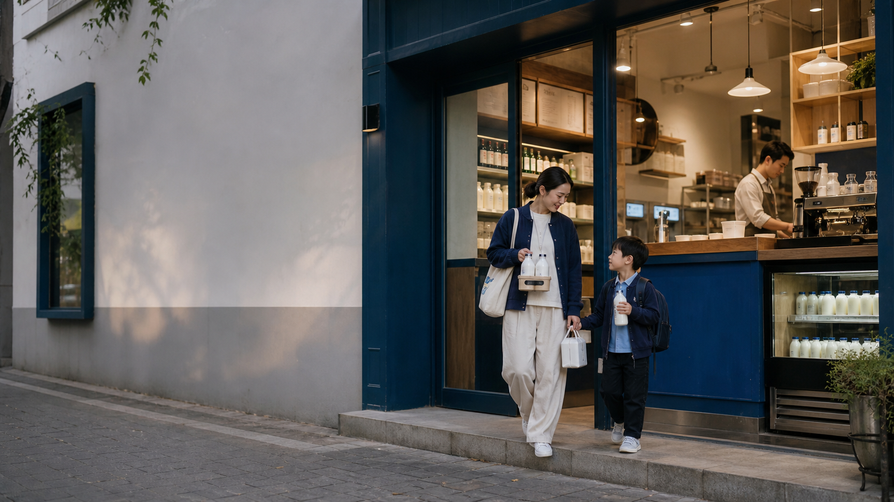

| 章节 | 内容 | 页码 |
|---|---|---|
| 第一章 | 项目概述与核心策略 | 04—18 |
| 第二章 | 品牌视觉与信息体系 | 19—25 |
| 第三章 | 店铺形象设计 | 26—34 |
| 第四章 | 产品与包装设计 | 35—41 |
| 第五章 | 周边礼品体系 | 42—45 |
| 第六章 | 线上传播与销售矩阵 | 46—57 |
| 第七章 | 线下活动与场景营销 | 58—62 |
| 第八章 | 执行落地规划 | 63—69 |

| 章节 | 内容 | 页码 |
|---|---|---|
| 第一章 | 项目概述与核心策略 | 04—18 |
| 第二章 | 品牌视觉与信息体系 | 19—25 |
| 第三章 | 店铺形象设计 | 26—34 |
| 第四章 | 产品与包装设计 | 35—41 |
| 第五章 | 周边礼品体系 | 42—45 |
| 第六章 | 线上传播与销售矩阵 | 46—57 |
| 第七章 | 线下活动与场景营销 | 58—62 |
| 第八章 | 执行落地规划 | 63—69 |
为什么项目成立，以及社区店依靠什么形成不可替代性
品牌基础
升级后的门店体系
项目定义： 打造以家庭日常营养服务为重点的社区店新零售体系。
| 时间 | 公开资料可确认信息 | 对本项目的意义 |
|---|---|---|
| 1953 年 | 广西国营西江机械农场成立，构成西江乳业的农垦源头 | 建立农垦背景与长期经营基因 |
| 1956 年 6 月 | 西江乳业始建；公开报道将西江农场奶牛场称为广西第一个奶牛场 | 形成可使用的乳业历史起点 |
| 2006 年 9 月 | 广西农垦西江乳业有限公司成立，主营奶牛养殖、乳品加工及销售 | 从农场乳品生产进入公司化经营 |
| 2022—2023 年 | 开始转型升级，拓展线上零售、茶饮供奶和“水牛奶＋”奶吧等渠道 | 从传统乳品走向年轻化、场景化零售 |
| 当前产业基础 | 公开发行材料披露两处奶源基地，并形成养殖、加工、销售一体化产业链 | 为社区门店产品与供应链提供基础 |
资料边界： 上述节点已有公开资料支持；现行公司名称、品牌权属、“北纬 23 度牧场”表述及最新门店规模，仍以项目方正式资料为准。
资料依据： 新华社、上海证券交易所公开发行材料、国家税务总局贵港市税务局、人民网广西频道。
| 现有问题 | 对应解决方向 |
|---|---|
| 缺少必须到店理由 | 试饮、即时自提、周边配送、订阅与社区服务 |
| 与电商／商超差异不明 | 突出鲜度、及时性、可交流、可体验和组合服务 |
| 零售与吧台人群分裂 | 使用同款水牛奶，共同服务家庭决策者及家庭成员 |
| 新茶饮红海竞争 | 年轻化作为视觉放大器，核心仍是家庭日常服务 |
| 品类认知不足 | 用品牌墙、产品说明、DIY 教学与内容矩阵持续解释 |
门店角色
差异化来源
周边配送、即时自提、鲜度承诺、早餐快速取、DIY 教学、组合产品和家庭订阅。
传播边界
年轻化、可拍照、可分享继续保留，但作为服务价值的视觉放大器，而不是项目唯一核心。
闭环结果： 尝鲜 → 信任 → 家庭补货 → 订阅 → 复购。
核心购买者
家庭饮用者
辅助测试人群
家庭决策者本人
孩子
父母长辈
家庭采购特点： 奶量需求相对稳定，一次购买需要兼顾多人、多个时段和持续补给。
| 维度 | 20—30 岁新茶饮潮流人群的角色 |
|---|---|
| 进入产品 | 鲜水牛乳拿铁、奶茶、茶咖、Gelato |
| 进入场景 | 写字楼、下午茶、社交分享和新品试喝 |
| 主要价值 | 提供新品反馈、形成内容与扩大视觉传播 |
| 人群边界 | 不与家庭决策者并列为社区店第一主客群 |
| 条件变化 | 若仍需作为主客群，应单独定义店型或传播场景 |
零售板块
吧台板块
相互引流方式
| 时段／场景 | 主要需求 | 对应产品与服务 |
|---|---|---|
| 早餐 | 快速、热饮、出门即取 | 热牛奶、鲜水牛乳拿铁、欧包／早餐包、预约自提 |
| 放学后／下午茶 | 补给、亲子、休息与尝鲜 | 奶茶、茶咖、鲜奶饮品、简单烘焙、DIY 内容 |
| 下班补货 | 家庭采购与次日准备 | 小瓶尝鲜、家庭量贩、一周奶、组合装、配送／订阅 |
场景关系： 早餐建立效率，下午时段建立体验，下班补货承接家庭复购。
组合产品的三重作用： 新品开发／DIY 教育／社群与内容载体。
资料说明： 历史节点引用新华社、上海证券交易所公开发行材料、国家税务总局贵港市税务局及人民网广西频道资料；产地传播口径与效率数字仍需结合项目方资料和运营能力确认。
| 产品角色 | 建议拳头产品 | 战略任务 | 主要场景 |
|---|---|---|---|
| 零售尝鲜款 | 小瓶水牛奶鲜奶 | 降低首次购买门槛，建立品类口感认知 | 早餐／临时补给／吧台联动 |
| 家庭补给款 | 水牛奶鲜奶量贩装 | 一次解决全家奶量补给，承接高频复购 | 下班补货／一周订阅 |
| 吧台引流款 | 鲜水牛乳拿铁 | 让用户先尝到零售同款水牛奶的差异 | 早餐／下午茶／新品尝鲜 |
项目目标
让用户一眼理解西江、水牛奶、门店价值和消费场景
核心要求
三类设计方向
| VI 模块 | 设计要求 |
|---|---|
| 标志与标准字 | 门店品牌形象必须同时让用户理解“西江”和“水牛奶” |
| 主色调 | 品牌蓝色＋纯净白＋温暖木色 |
| 辅助色 | 根据季节、节日和产品口味灵活调整 |
| 字体 | 圆润、友好、年轻但不幼稚，兼顾家庭与社区属性 |
| 辅助图形 | 延续核心符号，统一门店、包装、传播和周边应用 |
视觉边界： 不是只追求可爱或潮流，而是让亲切、可信和产品识别同时成立。
| 用户疑惑 | 内容回答方向 |
|---|---|
| 为什么选择水牛奶？ | 口感、产品特点、使用方式与适配场景；不使用未经证实的功效表达 |
| 为什么选择西江？ | 品牌历史、国营背景、牧场与供应链等可验证资产 |
| 为什么选择门店购买？ | 更新鲜、更及时、可试饮、可交流、可自提、可配送、可订阅 |
| 水牛奶能怎么玩？ | 鲜奶咖啡、奶茶、茶咖、抹茶、烘焙、Gelato 与家庭 DIY |
使用场景： 品牌墙、产品卡、货架说明、社交内容、活动教学与员工介绍。
门店识别与销售物料
品牌解释与场景物料
会员与线上物料
最终要求： 品牌、空间、包装与传播不是分别设计，而是同一套识别与信息体系在不同介质中的应用。
把品牌定位转化为真实可使用的社区空间
| 店型 | 面积 | 适用点位 | 主要任务 |
|---|---|---|---|
| 零售复合店型 | 30—50㎡ | 聚众商圈、人群集中点、社区密集交汇点 | 完整零售、体验与社区服务 |
| 纯零售微型社区点 | 10—20㎡ | 小区出入口；可评估与菜鸟驿站分租或相邻 | 快速补货、自提和配送 |
| 零售＋咖啡吧台复合型 | 15—30㎡ | 写字楼或年轻人聚集区域 | 鲜奶咖啡、早餐、下午茶与零售联动 |
选择原则： 面积不是唯一标准，需同时考虑家庭密度、到店时段、邻近业态和服务半径。
空间关键词： 温暖、新鲜、可信、可交流。
色彩与材质： 奶白色＋木色＋品牌蓝色；点状暖色灯光照亮产品、品牌墙和关键角落。
双板块关系
设计边界： 形成层次与拍照价值，但不过度网红化，也不牺牲快速购买效率。
咖啡吧台
Gelato 预留区
打卡与分享触点
社区友好功能
表达方式： 短标题＋图示＋产品或场景证据，避免整墙密集文字。
需要形成的主要输出
标准化目标： 首店设计既满足真实运营，也能沉淀为后续复制的空间规范。
让家庭补给、订阅、DIY 与送礼形成清晰产品层级
| 方案 | 主要设计内容 | 使用场景 | 需要评估 |
|---|---|---|---|
| 迷你手提篮筐装 | 7 瓶／盒对应周一至周日；星期标注与可控七色系统 | 日常自提、七日打卡、家庭补给 | 运输、清洁、承重与重复使用 |
| 设计感纸盒装 | 硬纸板盒体、定制内衬、翻开式／抽拉式结构 | 订阅、日常自用、节日送礼 | 冷链、防潮、成本与运输安全 |
共同内容
| 节日 | 包装方向 | 周边／内容方向 |
|---|---|---|
| 春节 | 红色系包装与年味主题 | 春联等春节周边 |
| 中秋 | 暖色调与团圆主题 | 趣味灯笼等团圆周边 |
| 儿童节 | 品牌 IP 与趣味表达 | 儿童限定周边或盲盒收集 |
设计原则
| 组合方向 | 组成 | 主要场景 |
|---|---|---|
| 鲜奶咖啡 | 牛奶＋咖啡液 | 居家咖啡、早餐、下午茶 |
| 奶茶／茶咖 | 牛奶＋茶粉 | 下午茶、亲子 DIY、社群分享 |
| 抹茶拿铁 | 牛奶＋抹茶粉 | 新品尝鲜、居家制作 |
| 烘焙组合 | 牛奶＋蛋挞等烘焙材料 | 家庭 DIY、周末亲子 |
| 早餐组合 | 热牛奶／鲜水牛乳拿铁＋欧包／早餐包 | 预约自提、通勤早餐 |
| 下午茶组合 | 奶茶／茶咖／鲜奶饮品＋轻食 | 到店休息、新品体验 |
产品作用： 增加使用方式、建立 DIY 教育内容、带动社群交流，并形成可持续传播素材。
层级关系： 尝鲜进入 → 场景体验 → 家庭补货 → 订阅复购 → 节日与内容延展。
| 消费阶段 | 产品角色 | 包装／组合 | 后续承接 |
|---|---|---|---|
| 第一次尝鲜 | 小瓶鲜奶、鲜水牛乳拿铁 | 即饮包装、吧台杯 | 试饮说明、入会与产品解释 |
| 家庭补货 | 家庭量贩 | 清晰容量与鲜度信息 | 自提、配送、复购提醒 |
| 周期消费 | 一周奶 | 手提篮筐装／纸盒装 | 周订阅、月订阅与打卡 |
| 玩法延展 | 咖啡、茶、抹茶、烘焙组合 | DIY 组合装 | 教学、社群和 UGC |
| 节日送礼 | 节日礼盒 | 主题包装＋限定周边 | 节日活动与礼赠传播 |
让品牌进入家庭日常使用与社区分享
四项选品原则
| 核心周边 | 获取方式 | 传播价值 |
|---|---|---|
| 刨冰机 | 购买一周奶礼盒＋满额赠 | 夏日自制刨冰与拍照内容 |
| 定制玻璃杯 | 注册会员＋首单赠送 | 日常使用形成品牌曝光 |
| 陶瓷碗／杯 | 积分兑换／节日限定 | 家庭餐具与晒图场景 |
| 品牌 IP 盲盒 | 消费满额抽／积分兑换 | 收集机制与话题传播 |
| 帆布袋 | 购物满赠 | 日常携带的移动曝光 |
机制对应任务
待测算： 赠品成本、满额门槛与积分价值需结合毛利和客单价确认。
| 周边类别 | 家庭使用场景 | 可形成的内容 |
|---|---|---|
| 刨冰机 | 夏日家庭制作、亲子 DIY | 刨冰制作与夏日饮奶玩法 |
| 玻璃杯／陶瓷碗杯 | 早餐、下午茶、日常饮奶 | 晒早餐、桌面与家庭饮奶记录 |
| IP 盲盒 | 儿童节、亲子互动、收藏 | 开箱、收集与交换 |
| 帆布袋 | 社区购物、到店自提 | 移动品牌曝光与生活方式内容 |
闭环： 购买或入会获得周边 → 家庭持续使用 → 用户分享 → 新用户认识品牌 → 回到门店与会员体系。
把到店体验转化为内容、交易、用户沉淀与复购
| 渠道 | 主要角色 | 核心内容／服务 |
|---|---|---|
| 小红书 | 核心种草阵地 | 家庭生活、门店打卡、产品测评、DIY 与知识解释 |
| 抖音 | 本地曝光与直播交易 | 短视频、门店 Vlog、制作过程、达人探店与店播 |
| 微信生态 | 私域沉淀 | 公众号、视频号、朋友圈、企业微信社群 |
| 小程序 | 交易与服务中枢 | 下单、自提、配送、订阅、会员、预约与活动 |
| 即时零售／电商 | 补充交易渠道 | 鲜奶即时需求、礼盒、组合装、直播转化 |
渠道关系： 内容平台完成认知与种草，微信和小程序沉淀用户，配送与电商承接不同购买时效。
运营目标： 建立“社区水牛奶日常营养站”认知，持续积累 UGC 和家庭生活内容。
品牌官方号
门店号
发布节奏
运营目标： 短视频扩大本地曝光，直播和达人内容连接到店、团购或小程序交易。
| 触点 | 主要内容 | 与交易的关系 |
|---|---|---|
| 公众号 | 品牌故事、新品、食谱、会员和社区活动 | 深度解释并引导小程序 |
| 视频号 | 短视频同步、直播和活动内容 | 视频内容连接直播与下单 |
| 朋友圈 | 店员日常、鲜奶到货、早餐提醒、社区服务 | 高频提醒与即时转化 |
使用原则： 微信内容不重复搬运所有平台，而是围绕已建立联系的家庭用户提供更及时的服务信息。
运营任务： 记录家庭用户的购买与服务关系，支持补货提醒、订阅履约、活动参与和持续复购。
| 社群类型 | 主要对象 | 主要内容 |
|---|---|---|
| 新客群 | 首次注册用户 | 新人福利、门店服务说明、自提配送和首次购买引导 |
| 活跃群 | 高频消费用户 | 新品、订阅、会员日、活动与周边 |
| 主题群 | 咖啡爱好者、亲子妈妈、家庭早餐等 | 鲜奶到货、DIY 教学、试喝招募和场景交流 |
拉新方式： 门店收银台二维码、入群优惠和老带新奖励。
日常内容： 鲜奶到货提醒、会员日、活动通知、报名与真实用户反馈。
| 等级 | 条件 | 权益 |
|---|---|---|
| 白银会员 | 注册即得 | 积分累计、生日礼 |
| 黄金会员 | 累计消费满 500 元 | 9.5 折、新品优先购 |
| 钻石会员 | 累计消费满 1500 元 | 9 折、专属周边、免费咖啡券 |
测算要求
当前状态（待验证）： 条件与折扣来自原大纲，需结合毛利、客单价和复购周期重新测算。
即时零售平台
传统电商平台
订阅制 DTC
| 类型 | 参考占比 | 主要角色 |
|---|---|---|
| 头部 KOL | 10% | 提升品牌格调与声量 |
| 腰部 KOC | 30% | 宝妈、上班族与本地生活内容，分享真实体验 |
| 素人用户 | 60% | 通过家庭日常和社区场景促进 UGC 自然发酵 |
合作方式
说明： 占比为原大纲参考结构，实际执行需结合预算与本地达人资源调整。
UGC 激励方式
线上闭环
门店体验与产品使用 → 用户内容 → 平台种草与本地曝光 → 微信／小程序沉淀 → 自提、配送与订阅 → 社群提醒和活动 → 再次消费与新内容。
原则： 激励内容围绕真实体验，不只追求打卡数量。
让门店服务转化为持续发生的社区关系
开业重点
| 周期 | 活动 | 主要作用 |
|---|---|---|
| 每周 | 会员日 | 订阅权益、会员触达与固定回店 |
| 每月 | 儿童读书角故事会 | 吸引亲子家庭并形成儿童友好体验 |
| 每月／按主题 | DIY 分享课 | 咖啡、奶茶、抹茶、烘焙与家庭早餐教学 |
| 每季度 | 儿童画作展、社区摄影展、家庭食谱展 | 让用户内容进入门店并形成社区共建 |
活动原则： 与产品使用、家庭场景和门店服务发生关系，避免活动与销售体系完全分离。
| 节日 | 空间／视觉 | 产品与活动 |
|---|---|---|
| 春节 | 红色主题装置 | 春节限定礼盒与年味周边 |
| 情人节 | 粉色主题打卡点 | 双人套餐 |
| 儿童节 | 品牌 IP 与亲子氛围 | 亲子 DIY 活动、儿童限定周边 |
| 中秋 | 月球灯装置与暖色调 | 中秋限定礼盒与团圆主题周边 |
统一要求： 节日变化不改变品牌核心识别，并与礼盒、周边和用户内容形成同一主题。
| 场景 | 门店触点 | 线上触点 | 产品承接 |
|---|---|---|---|
| 早餐 | 外立面、早餐海报、快速取餐 | 预约自提、企业微信早安提醒 | 热牛奶、鲜奶拿铁、欧包／早餐包 |
| 放学后／下午茶 | 儿童读书角、DIY、试喝 | 社群活动报名、亲子内容 | 奶茶、茶咖、鲜奶饮品、亲子套餐 |
| 下班补货 | 家庭量贩、一周奶陈列 | 到货提醒、30 分钟配送信息 | 家庭量贩、一周奶、次日早餐组合 |
场景闭环： 服务被看见 → 用户进入门店 → 产品解决当下需求 → 线上记录关系 → 下次在同一时段再次触达。
验证提示： “30 分钟配送”需根据配送半径和履约能力确认。
把设计、运营与首店验证按阶段推进
| 设计任务 | 章节归属 | 主要输出 |
|---|---|---|
| 店面品牌形象（需有西江、需有水牛奶） | 第二章＋第三章 | 标志、门头、外摆、空间识别与店型适配 |
| 广告语设计 | 第二章 | 定位语、品牌理由、门店理由、场景与效率表达 |
| 组合装包装设计 | 第四章 | 一周奶、DIY 组合、家庭量贩与礼盒 |
| 店内形象墙 | 第二章＋第三章 | 品牌故事、核心卖点与四大疑惑 |
| 特定场景推广海报 | 第二章＋第六／七章 | 早餐、下午茶、下班补货、节日和活动 |
| 常用物料 | 第二章＋第三至七章 | 菜单、价签、货架卡、会员、订阅、社群与活动物料 |
| 阶段 | 时间 | 核心任务 |
|---|---|---|
| 筹备期 | 第 1—2 月 | 品牌 VI、店铺空间、产品包装、小程序与服务流程设计 |
| 测试期 | 第 3 月 | 首店装修、首批产品生产、团队培训、试运营与数据修正 |
| 启动期 | 第 4 月 | 首店开业、线上渠道上线、达人探店与会员启动 |
| 爆发期 | 第 5—6 月 | 内容矩阵、社群运营、订阅与 UGC 激励规模化 |
| 复制期 | 第 7—12 月 | 模式复盘、标准化手册与第二／三家店筹备 |
推进原则： 前一阶段的产品、服务与履约结果，应成为下一阶段是否扩大的依据。
| 资源类型 | 建议投入 | 需要确认 |
|---|---|---|
| 设计费用 | VI＋空间＋包装一体化设计与打样 | 设计范围、打样轮次与首店施工边界 |
| 线上运营 | 小红书／抖音运营各 1 人、私域运营 1 人 | 结合现有团队规模和外包方式评估 |
| 门店团队 | 店长 1 人＋店员 2—3 人 | 覆盖咖啡／Gelato 操作与配送协同 |
| 首批营销预算 | 原大纲建议占首店总投入的 15%—20%（待测算） | 结合财务模型、开业计划和毛利确认 |
配置原则： 不以完整编制为前提，应根据首店业态、Gelato 是否启动和内容产能确定最小可执行团队。
| 维度 | 核心指标 | 标值 |
|---|---|---|
| 流量 | 日均到店客流 | ≥100 人 |
| 传播 | 小红书／抖音 UGC 月均篇数 | ≥500 篇 |
| 转化 | 会员注册转化率 | ≥40% |
| 留存 | 月复购率 | ≥30% |
| 销售 | 单店月均营收 | 根据城市级别设定 |
| 服务 | 早餐自提时效、配送达成率、订阅履约率 | 首店测试后设定 |
校准要求
品牌与命名（待验证）
产品与履约（待验证）
门店与客群（待验证）
运营与财务（待验证）
已确认并进入制作
后续制作原则